My Global
Flowers
Branding and website design for a flower shop with worldwide delivery
Advertising Concept
Targeted advertising campaigns were launched for the company across Yandex and VK, helping to significantly attract new audiences and customers. I also created layouts for outdoor advertising, including a dynamic banner displayed on large digital screens across the city.
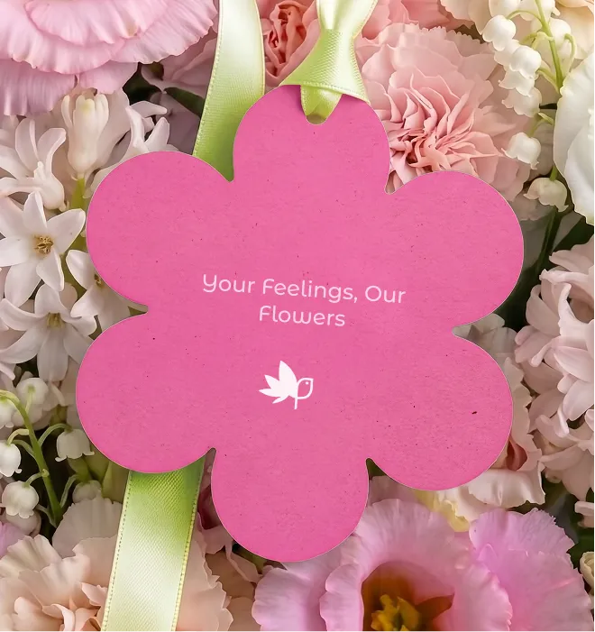
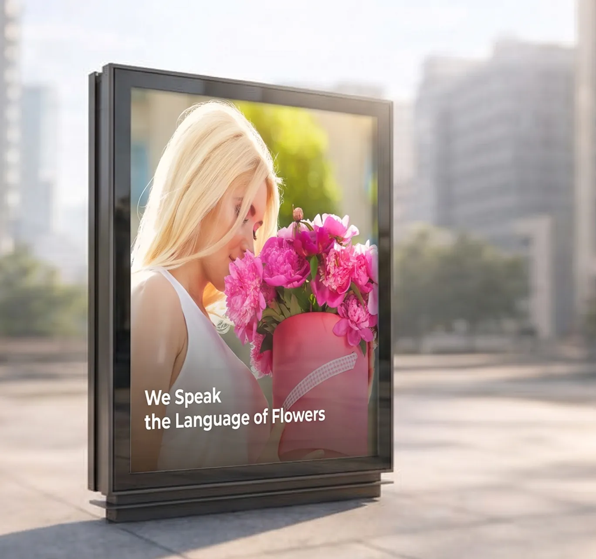
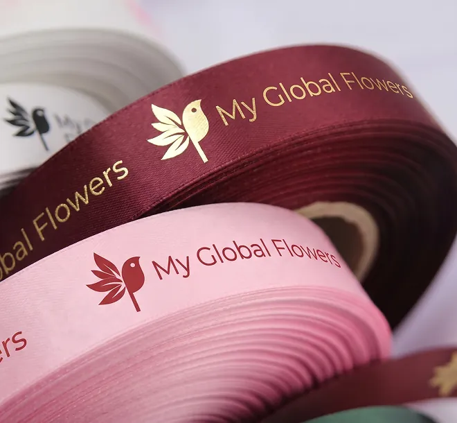
Designed all customer touchpoints, including cards, packaging, ribbons, gift cards, and brand collaborations.
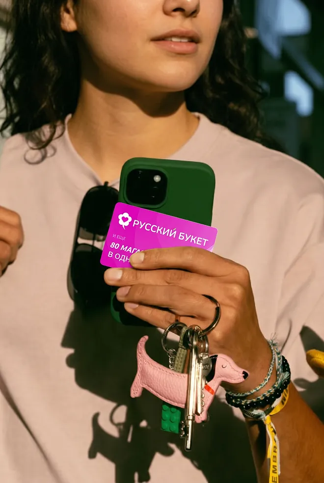
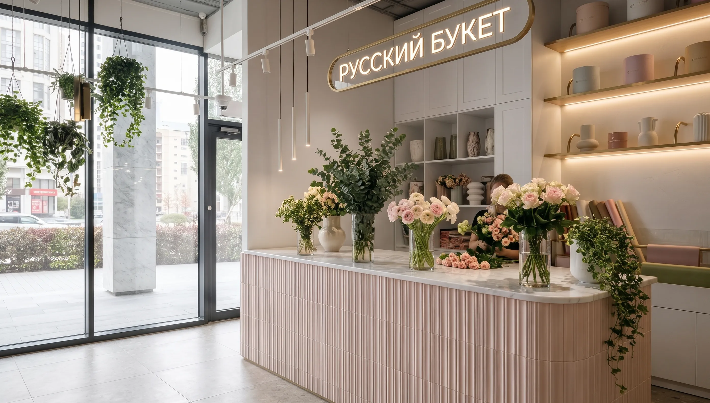
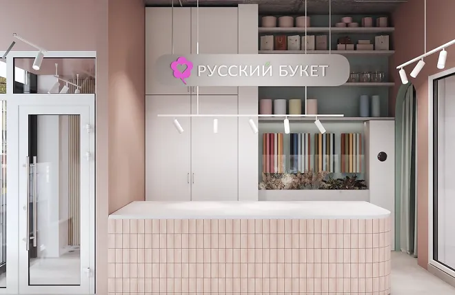
Market Concept
An important part of my work was developing the visual concept for the physical store. The approved 3D design was faithfully brought to life, fully reflecting the brand identity, guidelines, and overall concept I had developed.
Core Business Idea
The business is built around a fully remote flower-ordering experience through a website and mobile app, offering a quick, seamless, and highly customizable way to order bouquets for home delivery.
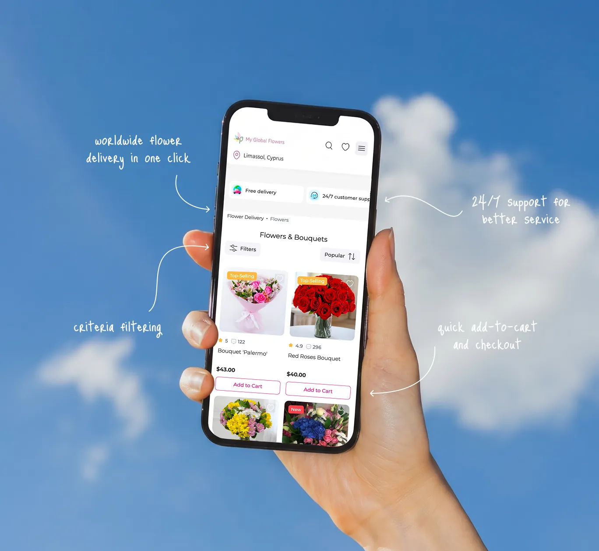
Checkout Flow
I designed part of the mobile app’s functionality and user flow, including the checkout process and its key features: a delivery date and time picker, address selection, and recipient details.
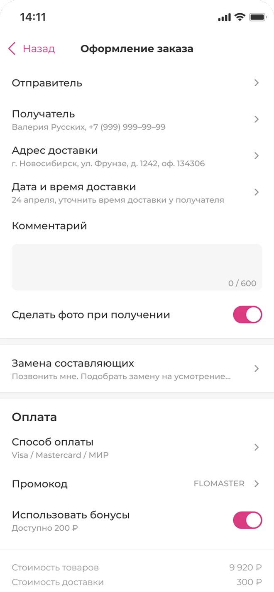
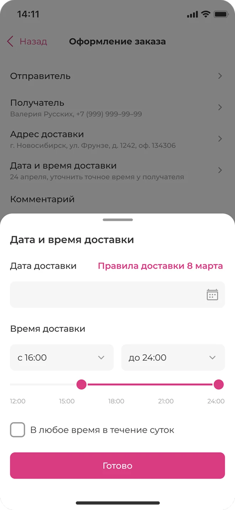
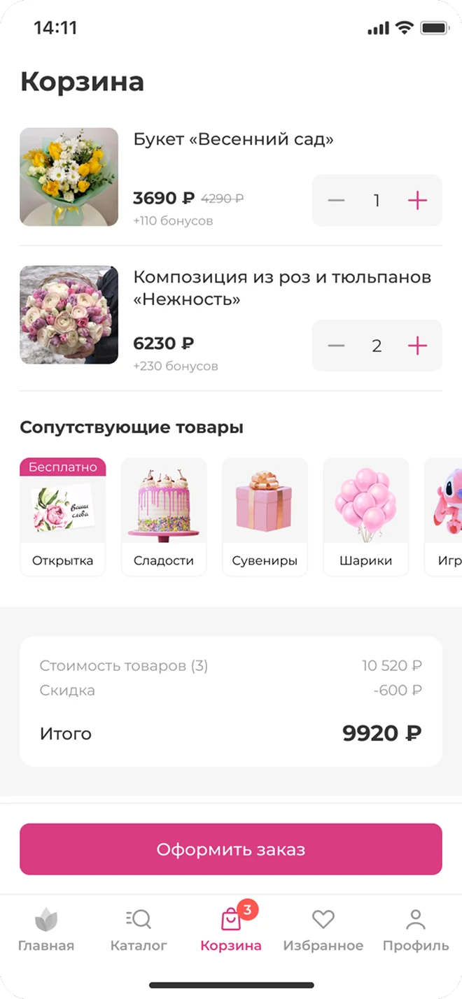
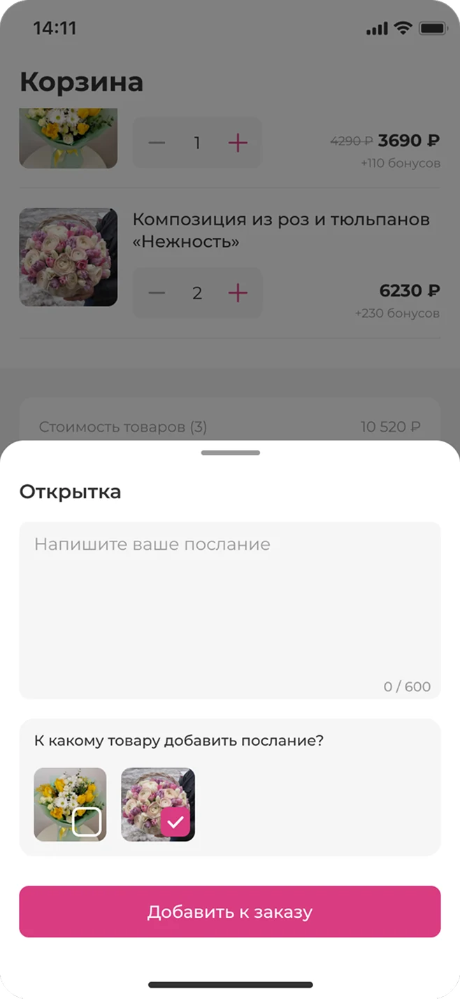
Loyalty Program
As part of the strategy to retain new users and increase conversion, a loyalty program was introduced. The design concept is built around interactivity: the flower grows and develops as the customer progresses through different loyalty levels, creating a simple and visual way to track their status.
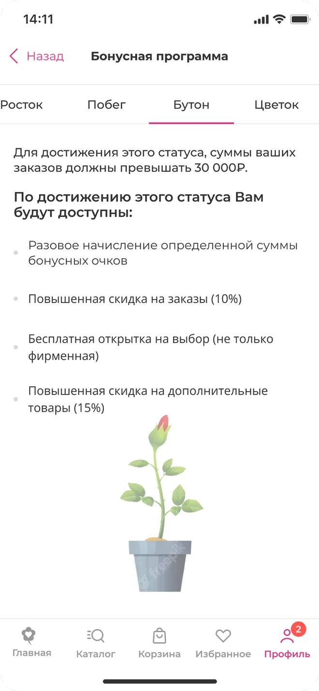
Email Validation Logic
As the business grew and the number of customers and user accounts increased, there was a need to develop a clear logic for email validation. I designed and structured this logic and presented it as a visual flowchart to make the process clear and easy to implement.
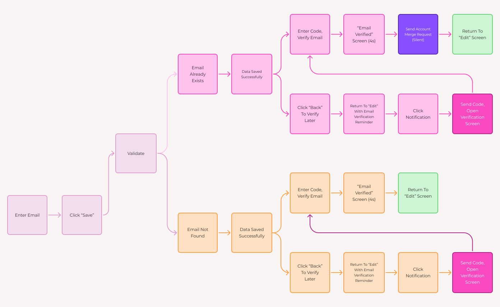
Result
- +65%
- Increase in qualified leads after monthly ad campaigns
- More than 40%
- Website conversion rate growth
- +38%
- Sales growth after store opening
- +15%
- Brand awareness